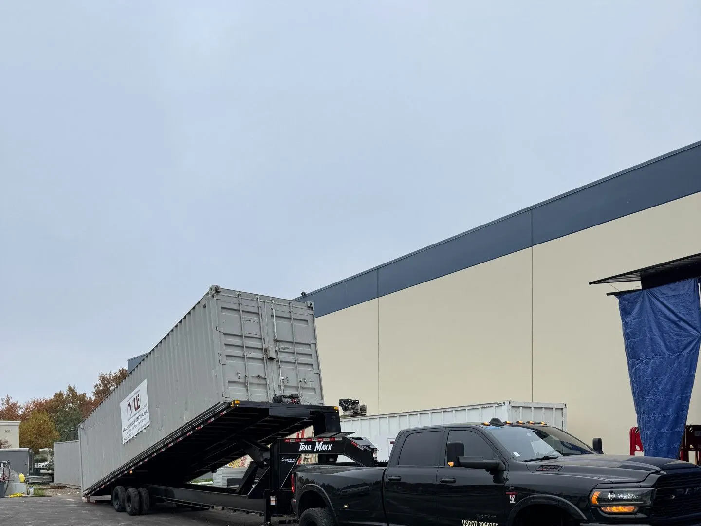

★★★★★
“Fast, professional, and the best towing equipment is used to protect your valuable car.”Khong Xiong
Heavy-duty towing for semis, commercial vehicles, RVs, 5th wheels, work trucks, equipment, containers and oversized recoveries. When the job needs more than a standard tow truck, A's Towing brings the right rig.
From semis and commercial fleets to RVs, work trucks, equipment and containers, each job is matched with the towing or transport setup built for the load.

A's Towing handles larger commercial vehicles, equipment, RVs and specialty loads with equipment selected for weight, dimensions, axle setup and access conditions.
Use the interactive map to view the Fresno and Clovis core area or zoom out to see the advertised long-distance service radius.
Core towing serves Fresno, Clovis and surrounding communities. Long-distance towing is available up to 500 miles from Fresno depending on the job and availability.





“Fast, professional, and the best towing equipment is used to protect your valuable car.”Khong Xiong
“Aaron from A's Towing was great towing my car long distance. Quick in replying back and got my car in no time.”Ravneet Singh
“Have had several vehicles towed by him. Courteous, good communication, great price and zero issues.”Michael Felix